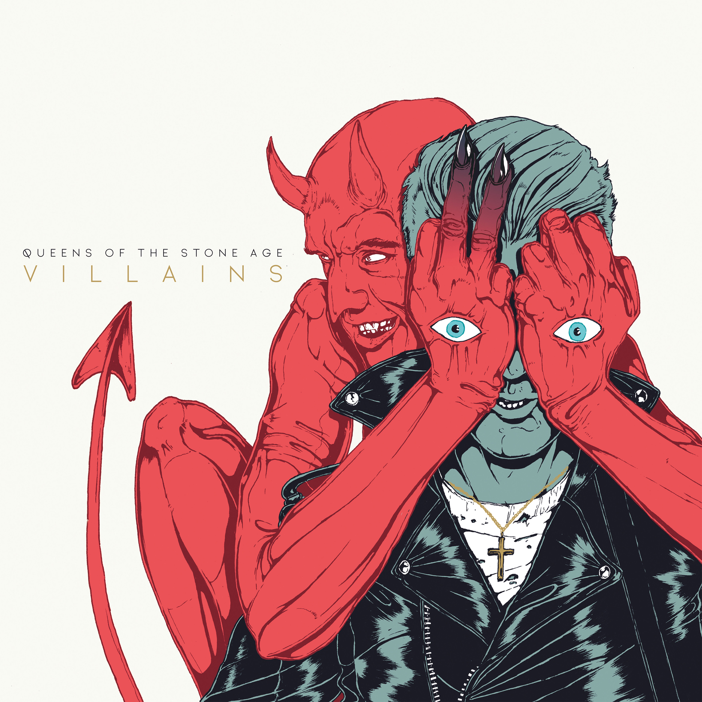
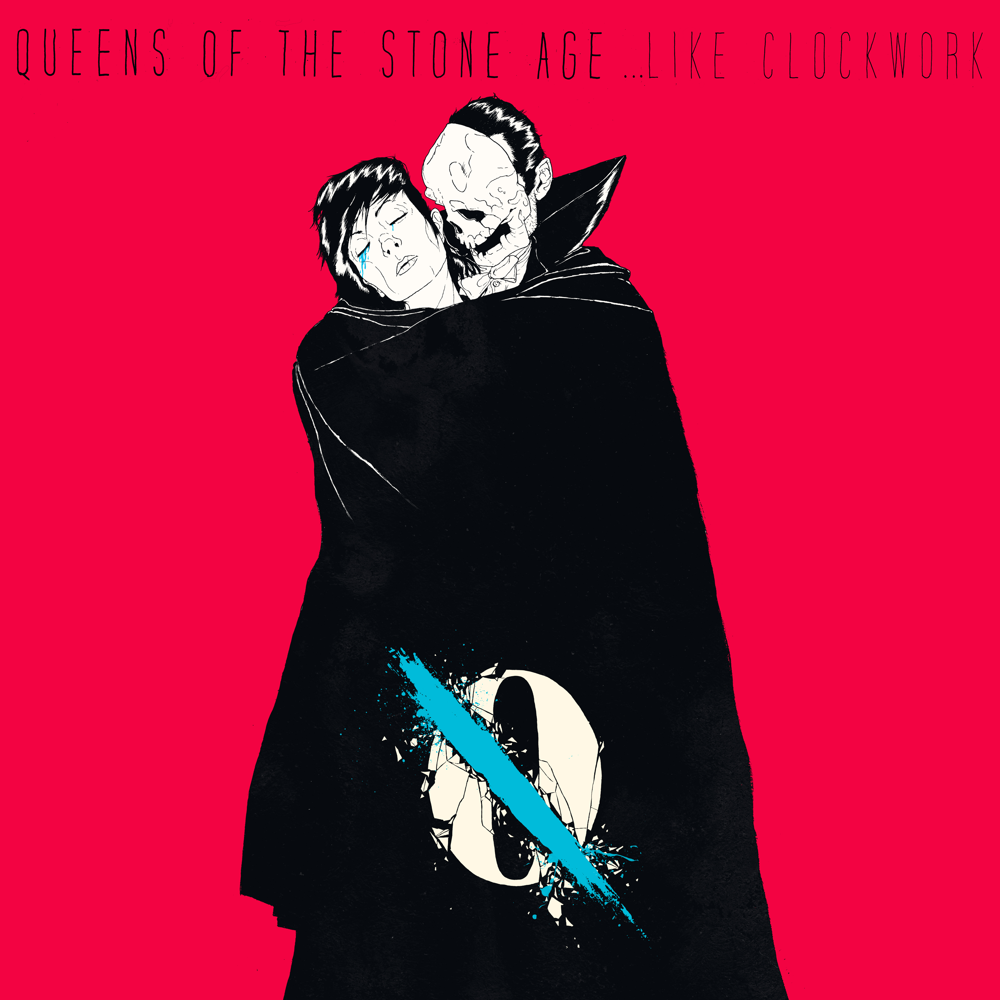
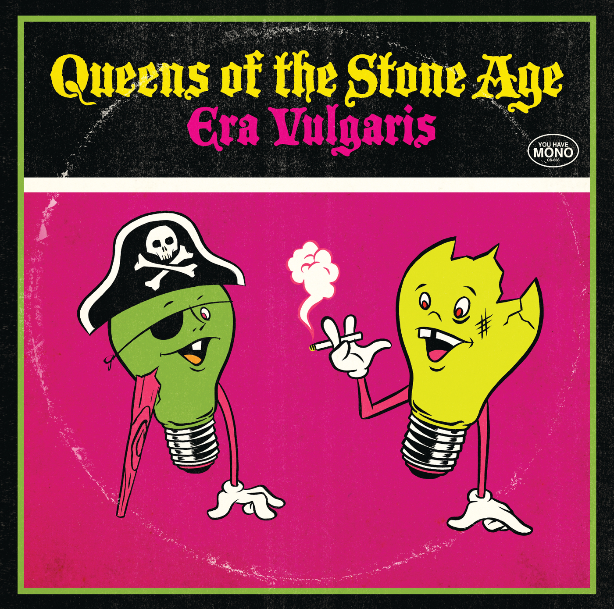
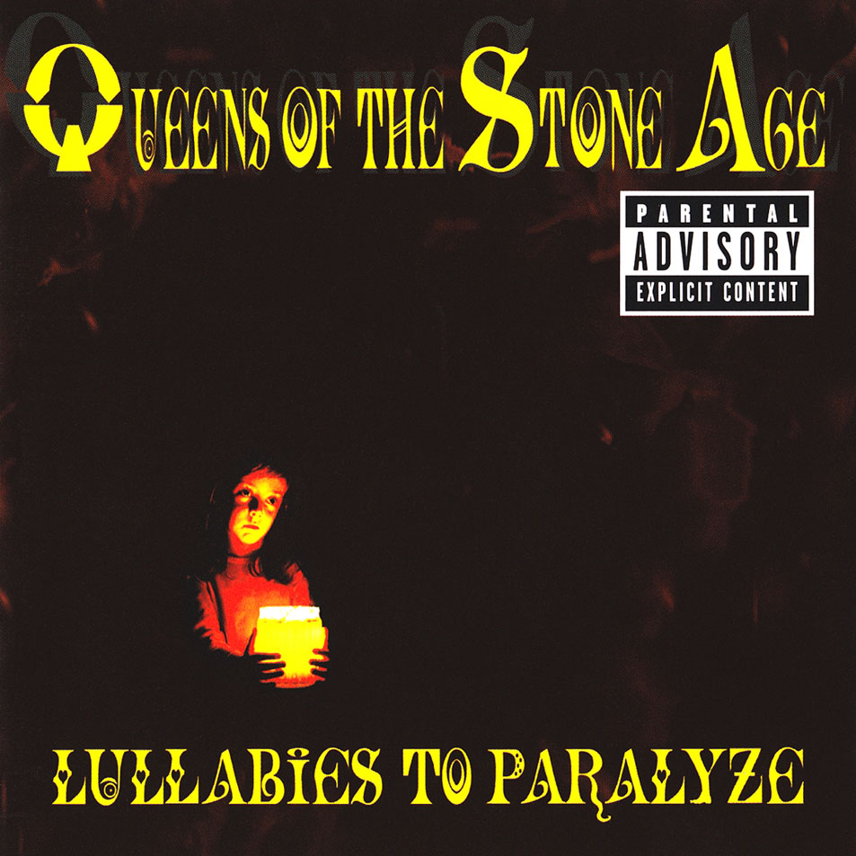
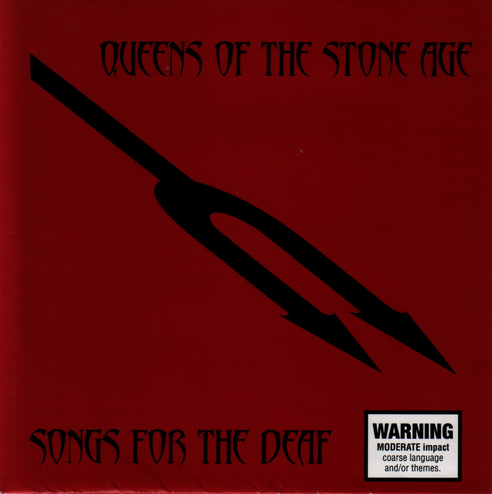
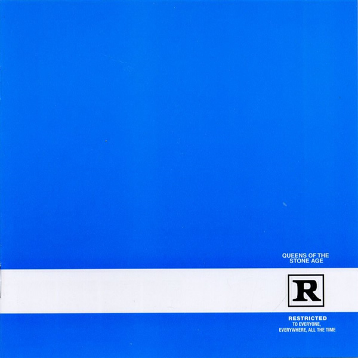
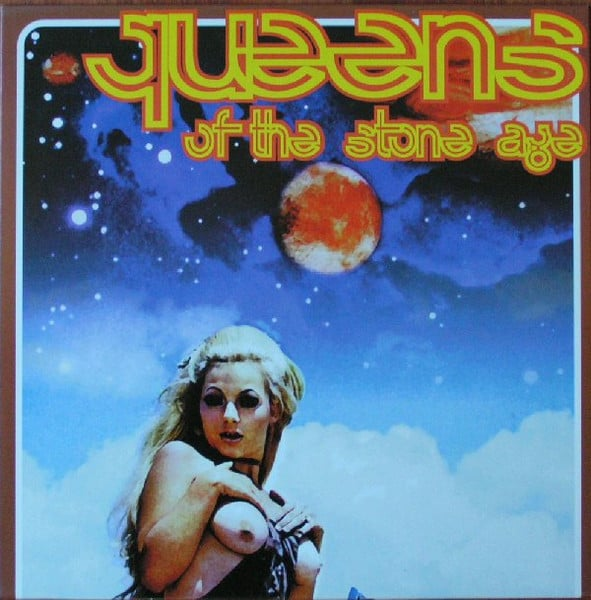

Villains
25 août 2017 | MATADOR RECORDS

…Like Clockwork
3 juin 2013 | MATADOR RECORDS

Era Vulgaris
12 juin 2007 | INTERSCOPE RECORDS

Lullabies to Paralyze
22 mars 2005 | INTERSCOPE RECORDS

Songs for the Deaf
27 août 2002 | INTERSCOPE RECORDS

Rated R
6 juin 2000 | INTERSCOPE RECORDS
